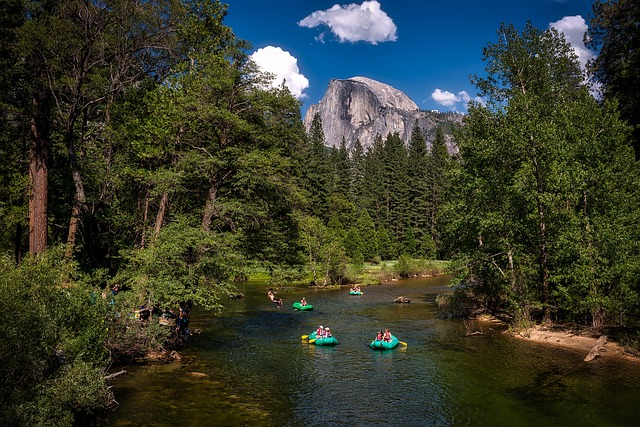

Our Trips

This place reserves the right of passage for all those who come for peace and serenity that comes with rafting. This is the place of where you will feel the mountains that will dew upon the very pores of your skin to enlighten them to your body a whole new sense of nature. Located in the very heart of the islands off of the Alaskan North with 40 miles of white water rafting. Contact us for more!
For those who are seeking the "why" in the might of the night, Yosemite is the one you can never go wrong but always right. With 50 miles of white water and serene standstill water, this is the place to find your future into rafting. Contact us for more!

Don't mistake the name for its lack luster white water routes. This river will blow you out of the water like the yellow river but safer. This not only has a wopping 60 mile river run but also great notorious recreational scenery and activities literally untouch unless you are a rafter. With some locations only accessible to rafting, this place makes it the top of our trips to rediscover rafting and yourself. Contact us for more!